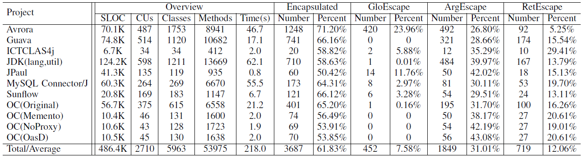

Introduction
Encapsulation is one of the basic characteristics of object-oriented programming. However, the access modifiers provided by common object-oriented languages do not help much because they only encapsulate the member references rather than the objects pointed to by them. Bad encapsulation makes object-oriented programs difficult to understand and reason about, thus concealing potential software vulnerabilities. We present in this paper the encapsulation analysis technique, which is an expression-based dataflow analysis, to statically compute the runtime memory layouts of object-oriented programs. The analysis results can help developers to master an intuitive comprehension on the code quality regarding encapsulation of classes. The experiment results on various open-source Java projects and libraries show that our approach is both effective (38.17% of the classes are reported as not fully encapsulated) and efficient (2.15 KLOC/s and 27.35 classes/s) in finding potential encapsulation problems. We also give common guidance on how to achieve better encapsulation for object-oriented programs.
Basic idea
Poor encapsulation brings in potential bugs. The rationale contains two parts: first, the target class is poorly encapsulated and shares its inner memory with the outside through its methods; second, the outside modifies the shared memory, resulting in unintentional behaviors that are unknown and invisible to the class. Our approach deals with this problem from two perspectives:
- From the viewpoint of the classes, we identify the classes that potentially share memory with the outside, the members that are shared, and the methods are responsible.
- From the viewpoint of the clients, we discover how the shared memory is accessed by the outside.
Evaluation
To evaluate the usefulness of our approach, we answer the following research questions:
- RQ1: How effective is encapsulation analysis?
- RQ2: Is encapsulation analysis efficient enough to process real-life projects?
- RQ3: Do the analysis results help developers understand and review code?
The experimental results of our approach are as follows.
Figure 1 lists the numbers and percentage of fully encapsulated classes, classes with GloEscape members, classes with ArgEscape members and classes with RetEscape members for the projects and libraries.  Figure 2 presents the way in which the class members of the projects and libraries are exposed to the outside. Figure 3 shows the methods the are responsible for exposing the class members. The benchmarks and detailed experimental results can be found here.Downloads
We implement our approach as part of a Hoare-style code verification tool called Accumulator written in Java. The tool is avaliable here. Note that the source code of the whole tool is not available for now, thus the source code of encapsulation analysis cannot be compiled seperately.